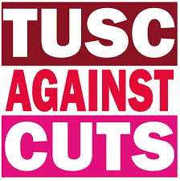

 Nellist for Erdington
Home
About
Events
Join the Campaign
Trade Union Support
Contact us
Donate
Click here for Dave's election-day message
Dave Nellist
Your socialist candidate for the Erdington By-Election
Thursday 3rd March 2022